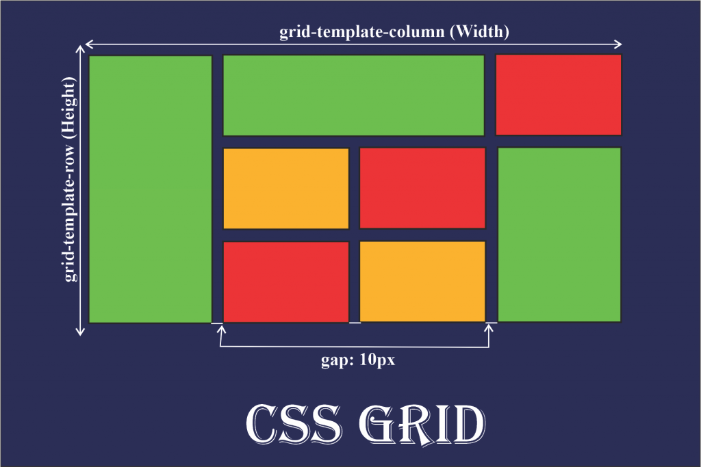

What is CSS Grid?
CSS Grid Layout is a modern, two-dimensional layout system for the web. It enables you to create complex, responsive layouts by dividing a container into rows and columns, and placing child elements (grid items) into these defined areas. Unlike Flexbox (which is one-dimensional), Grid lets you control both rows and columns simultaneously, making it ideal for web page layouts, dashboards, galleries, and more.
-
Grid Container: The parent element with
display: gridordisplay: inline-grid. It establishes a new grid formatting context for its children.
Example:.container { display: grid; } -
Grid Items: The direct children of the grid
container. Each becomes a grid item and can be precisely placed
using grid properties.
Example:<div class="container"> <div>Item 1</div> <div>Item 2</div> </div> -
Tracks: The horizontal (rows) and
vertical (columns) divisions of the grid. Tracks
are defined by
grid-template-rowsandgrid-template-columns.
Example:.container { grid-template-columns: 1fr 2fr 1fr; grid-template-rows: 80px 80px; } -
Grid Lines: The dividing lines between tracks,
referenced by number or name. Lines are used to place and span grid
items.
Example:.item { grid-column-start: 2; grid-column-end: 4; grid-row-start: 1; grid-row-end: 3; } -
Cells & Areas: A cell is a single
grid space; an area is a rectangular group of one
or more cells, optionally named for semantic placement.
Example:.container { grid-template-areas: "header header" "sidebar main"; } .header { grid-area: header; }
grid-template-rows and
grid-template-columns.Implicit Grid: Created automatically when items are placed outside the defined grid, using
grid-auto-rows and
grid-auto-columns.Example:
.container {
grid-template-columns: 100px 100px;
grid-auto-rows: 40px;
}Key CSS Grid Properties
display: grid | inline-grid-
grid-template-columns,grid-template-rows grid-gap/gap-
grid-column,grid-row,grid-area grid-template-areas-
justify-items,align-items,justify-content,align-content -
min-content,max-content,minmax(),fr,repeat(),auto-fill,auto-fit
Basic Grid Container & Items
Set display: grid on a container to enable grid layout.
Direct children become grid items.
.basic-grid {
display: grid;
grid-template-columns: 1fr 1fr;
gap: 12px;
}Defining Columns & Rows
Use grid-template-columns and
grid-template-rows to define the structure.
.columns-rows-grid {
display: grid;
grid-template-columns: 120px 1fr 2fr;
grid-template-rows: 60px 60px;
gap: 10px;
}Grid Gap (Spacing)
gap (or grid-gap) sets spacing between rows
and columns.
.gap-grid {
display: grid;
grid-template-columns: repeat(2, 1fr);
gap: 24px 8px;
}Grid Lines, Start/End, and Spanning
Use grid-column and grid-row to control
where items start/end and how many tracks they span.
.lines-grid {
display: grid;
grid-template-columns: repeat(3, 1fr);
grid-template-rows: 50px 50px;
gap: 8px;
}
.lines-grid .span2 {
grid-column: 1 / span 2;
}
.lines-grid .row-span {
grid-row: 1 / span 2;
}Named Grid Areas
Use grid-template-areas and grid-area for
semantic layouts.
.area-grid {
display: grid;
grid-template-areas:
"header header"
"sidebar main"
"footer footer";
grid-template-columns: 120px 1fr;
grid-template-rows: 50px 120px 40px;
gap: 8px;
}
.area-grid .header { grid-area: header; }
.area-grid .sidebar { grid-area: sidebar; }
.area-grid .main { grid-area: main; }
.area-grid .footer { grid-area: footer; }
Flexible Sizing: fr, minmax(),
auto-fit, auto-fill
Use fr for flexible tracks, minmax() for
min/max sizes, and auto-fit/auto-fill for
responsive grids.
.flexible-grid {
display: grid;
grid-template-columns: repeat(auto-fit, minmax(100px, 1fr));
gap: 12px;
}
Alignment: justify-items, align-items,
justify-content, align-content
Control alignment of items and tracks within the grid container.
.align-grid {
display: grid;
grid-template-columns: repeat(2, 120px);
grid-template-rows: repeat(2, 60px);
justify-items: end;
align-items: center;
justify-content: space-between;
align-content: space-around;
gap: 10px;
}
Intrinsic Sizing: min-content & max-content
Use min-content and max-content to size
tracks based on their content.
.intrinsic-grid {
display: grid;
grid-template-columns: min-content max-content;
gap: 10px;
}Explicit vs. Implicit Grids
Explicit grid is defined by
grid-template-rows and
grid-template-columns.
Implicit grid is created when you place items outside
the defined grid, and tracks are auto-generated using
grid-auto-rows and grid-auto-columns.
Explicit Grid
.explicit-grid {
display: grid;
grid-template-columns: 100px 100px;
gap: 8px;
}Implicit Grid
.implicit-grid {
display: grid;
grid-template-columns: 100px 100px;
grid-auto-rows: 40px;
gap: 8px;
}Notice: The explicit grid only defines two columns and two rows, so items 5+ are placed in new, auto-generated (implicit) rows.
Responsive Grid Example
Here's an example of a responsive grid using minmax() and
repeat().
.container {
display: grid;
grid-template-columns: repeat(4, minmax(60px, 1fr));
grid-template-rows: 40px 40px;
}Best Practices & Resources
- Use Grid for two-dimensional layouts, Flexbox for one-dimensional.
-
Combine
fr,minmax(), andauto-fitfor responsive designs. -
Use
grid-template-areasfor semantic, maintainable layouts. - Test your grid layouts on different screen sizes and browsers.
- Reference: CSS-Tricks: Complete Guide to Grid